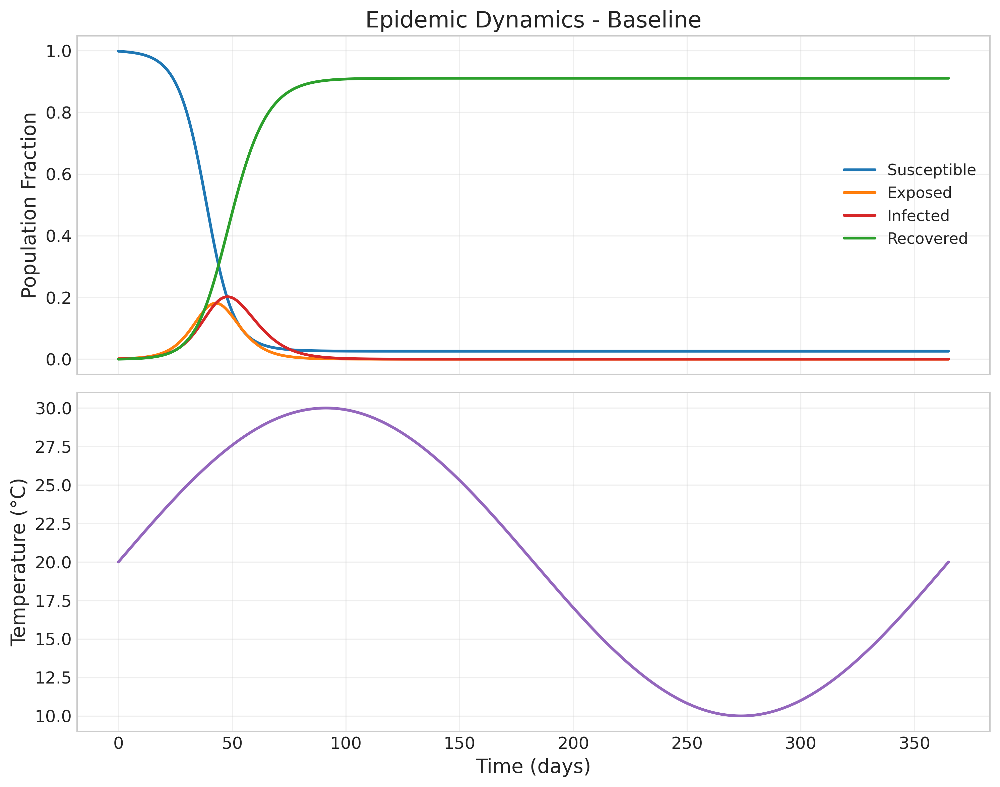
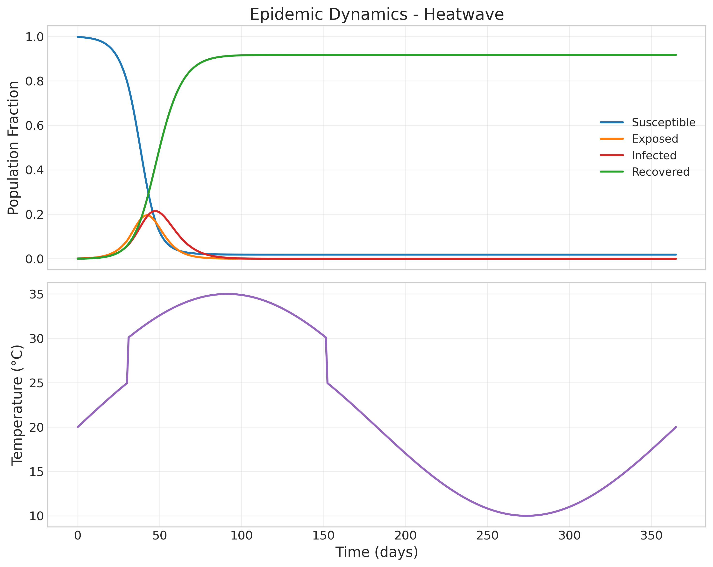
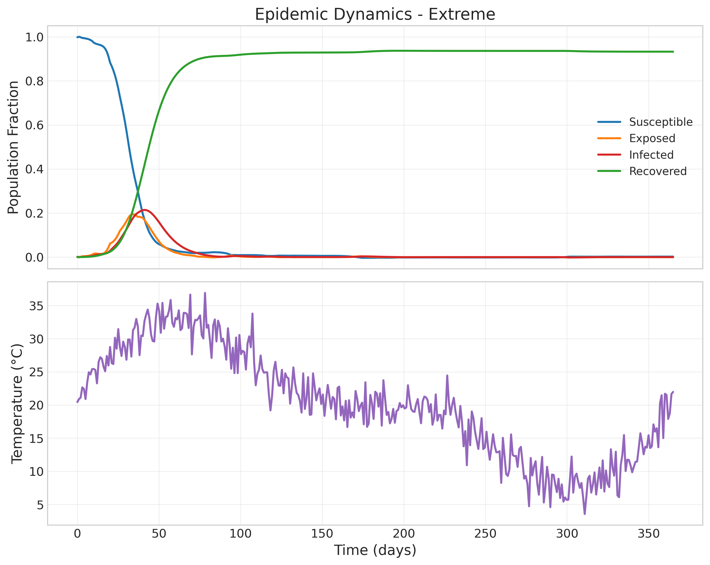
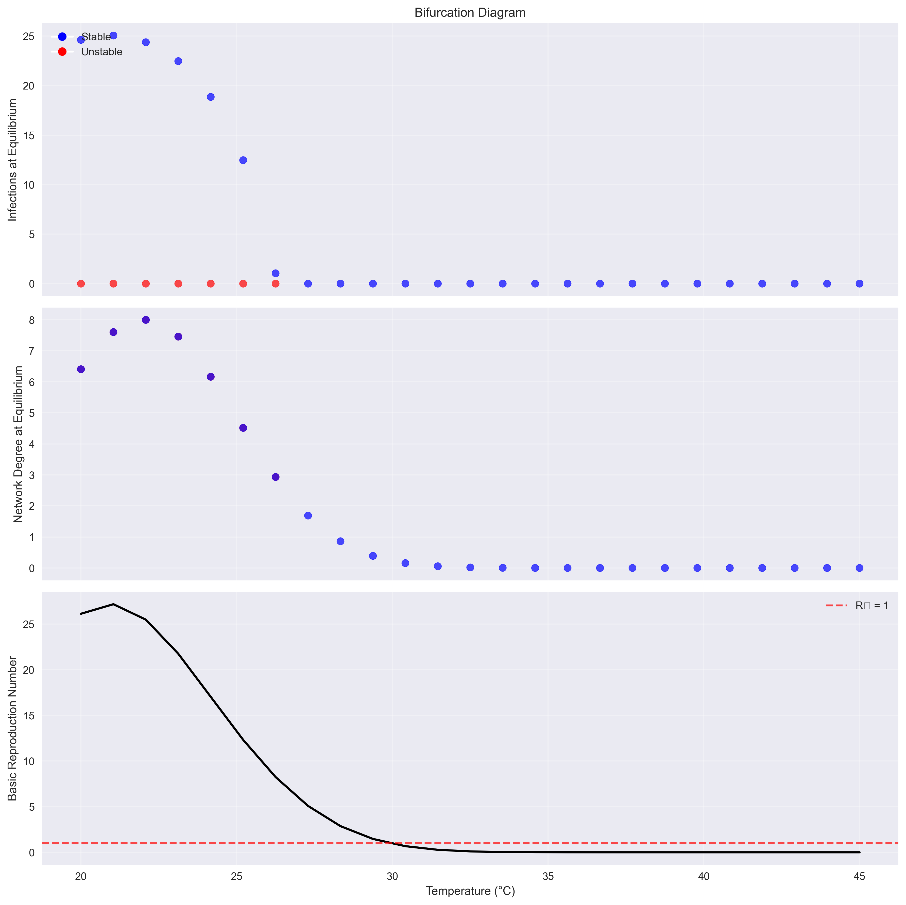

Epidemic Dynamics

SEIR compartment evolution over time
Baseline Scenario
Epidemic dynamics under baseline climate conditions
Heatwave Scenario
Epidemic dynamics during heatwave conditions
Extreme Weather Scenario
Epidemic dynamics under extreme weather conditions
Phase Portrait

System phase space trajectories
Bifurcation Diagram
System bifurcation analysis